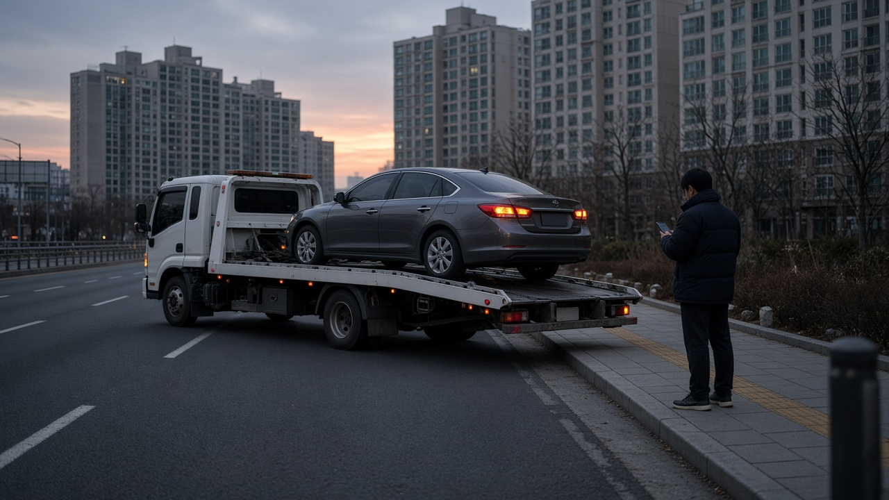
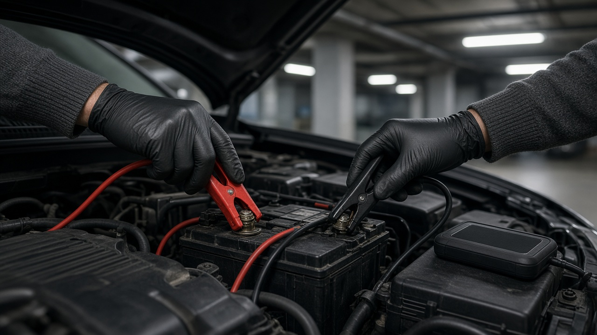
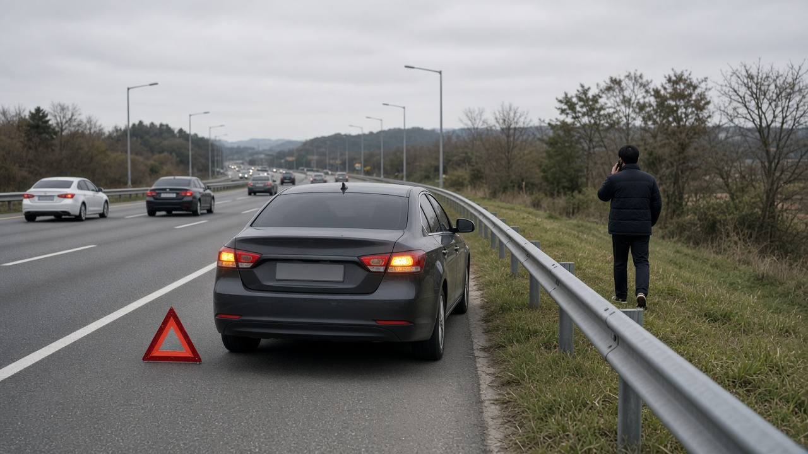

자동차보험 긴급출동 견인 10km 넘으면 1km당 요금, 연 6회 다 쓰면 추가 가입도 안 되는 이유

차가 갑자기 서 버리면 제일 먼저 떠오르는 게 보험사 긴급출동이죠. 그런데 막상 견인차를 부르고 나서 무료 거리를 넘었다며 추가 요금을 안내받거나, 올해 몇 번 썼는지 몰라서 망설이는 분이 많아요. 긴급출동은 기본 보험에 자동으로 들어 있는 게 아니라 특약이라서 견인 거리와 횟수, 서비스 범위가 회사와 가입 종류마다 달라요. 오늘은 주요 손해보험사가 누리집에 공개한 안내를 바탕으로 무료 견인 거리, 연간 횟수, 배터리와 비상급유 조건, 고속도로에서 먼저 쓸 수 있는 무료 견인까지 순서대로 정리해 볼게요.
긴급출동은 특약이고 1년에 쓸 수 있는 횟수가 정해져 있어요
긴급출동 서비스는 자동차보험에 붙이는 특약이라서 가입해 둔 차만 받을 수 있어요. 현대해상, DB손해보험, 하나손해보험, 캐롯이 공개한 안내를 보면 보험기간 1년 기준으로 6회가 기본이에요. 롯데손해보험은 가입 종류에 따라 실속형과 기본형 5회, 안심형 6회, 고급형 12회로 나뉘어 있고요.
보험기간이 1년보다 짧으면 횟수도 줄어요. 하나손해보험은 6개월 이상 1년 미만이면 5회, 3개월 이상 6개월 미만이면 3회, 3개월 미만이면 1회로 안내하고 있어요.
여기서 꼭 알아 둘 점이 있어요. DB손해보험과 롯데손해보험 안내에는 횟수를 모두 쓰고 나면 추가 가입이 안 된다고 적혀 있어요. 배터리 방전이나 문 잠김 같은 일로 횟수를 일찍 다 써 버리면, 정작 견인이 필요한 날 실비를 내야 할 수 있다는 뜻이에요. 보험사 앱에서 남은 횟수를 한 번씩 확인해 두시면 좋아요.

무료 견인 거리는 10km부터 시작하고 넘으면 거리만큼 실비가 붙어요
일반 긴급출동 특약의 기본 견인 거리는 10km인 곳이 많아요. 현대해상은 사고나 고장으로 움직일 수 없을 때 하루 1회, 원하는 곳까지 10km 한도로 견인하고 넘으면 1km당 2,200원을 받는다고 안내해요. 하나손해보험도 기본은 10km이고, 상위 특약은 50km까지라고 적혀 있어요.
회사나 가입 종류에 따라 더 긴 경우도 있어요. 캐롯은 기본이 하루 1회 30km이고, 견인 확대 추가 특약을 넣으면 60km까지 늘어나요. 롯데손해보험은 실속형 10km, 기본형 30km, 안심형 50km로 나뉘고, DB손해보험은 10km, 20km, 40km 중에서 고르고 상위 서비스는 60km까지라고 안내하고 있어요.
그래서 사고가 났을 때 단골 정비소나 공식 서비스센터가 멀다면, 무료 거리 안의 가까운 정비소로 갈지 추가 요금을 내고 원하는 곳까지 갈지 미리 정하는 게 좋아요. 견인 기사님께 출발 전에 예상 거리와 추가 금액을 물어보면 나중에 실랑이가 줄어요.
배터리 충전, 비상급유, 문 잠김 해제는 조건이 따로 있어요
배터리 방전은 가장 많이 부르는 서비스예요. 시동이 걸리도록 임시로 충전해 주는 것까지가 기본이고, 새 배터리로 바꾸면 그 비용은 따로 내야 해요. 롯데손해보험은 하이브리드와 전기차는 배터리 충전 대신 견인으로 대신한다고 안내하고 있어요.
비상급유는 연료가 떨어졌을 때 몇 리터만 넣어 주는 서비스인데, 현대해상과 하나손해보험, 캐롯 모두 보험기간 중 2회, 하루 1회, 3리터 한도로 안내해요. 상위 특약에서는 5리터까지인 경우도 있어요. LPG 차는 주유 대신 가까운 충전소까지 견인해 줘요.
차 키를 안에 두고 문을 잠갔을 때 여는 서비스도 있지만, 트렁크는 빠지고 수입차는 안 되는 경우가 많아요. 현대해상과 롯데손해보험 모두 외산차는 잠금장치 해제를 제공하지 않는다고 적어 두었어요. 타이어 펑크는 단순 펑크 수리나 차에 실린 예비 타이어로 바꿔 주는 데까지이고, 새 타이어 값은 따로 들어요.

전기차는 견인 거리가 훨씬 길게 잡혀 있어요
전기차는 고전압 배터리가 바닥나면 현장 충전이 어렵기 때문에 충전소까지 길게 끌어 주는 방식이에요. 현대해상은 고전압 배터리가 방전됐거나 계기판의 주행 가능 거리가 10km 이내일 때 하루 1회 충전소까지 100km 한도로 견인해 준다고 안내해요. 캐롯은 전기차와 수소전기차를 하루 1회 150km까지 견인하고, 일부 특약은 현장에서 15kWh 한도로 충전해 주는 서비스도 두고 있어요.
전기차를 타신다면 내 특약이 일반형인지 친환경차용인지부터 확인해 보세요. 같은 회사라도 특약 이름에 따라 충전 지원과 견인 거리가 달라요.
고속도로에서는 도로공사 무료 견인을 먼저 떠올리세요
고속도로 본선이나 갓길에 차가 멈췄다면 보험사 견인을 기다리는 동안 뒤차에 받히는 2차 사고가 가장 위험해요. 한국도로공사는 이런 차를 가장 가까운 휴게소, 영업소, 졸음쉼터 같은 안전지대까지 무료로 견인해 주는 긴급견인 서비스를 운영하고 있어요. 신청은 한국도로공사 콜센터 1588 2504로 하면 되고, 보험사와 상관없이 쓸 수 있어요.
대상은 승용차, 16인승 이하 승합차, 1.4톤 이하 화물차예요. 안전지대에서 원하는 곳까지 가는 비용은 본인 부담이라서, 거기서부터 보험사 긴급출동을 이어서 부르면 돼요. 민자고속도로는 노선마다 콜센터 번호가 따로 있으니 해당 도로 안내판을 확인하세요.
위치를 설명할 때는 갓길에 200m마다 세워진 기점표지판 숫자를 보고 고속도로 이름, 방향, 숫자 순서로 말하면 빨리 찾아와요. 전화보다 먼저 할 일은 비상등을 켜고 가드레일 바깥처럼 안전한 곳으로 몸을 피하는 거예요.
오늘 내용은 10월 29일 기준 각 보험사와 한국도로공사가 공개한 안내를 정리한 일반 정보예요. 실제 횟수와 거리, 추가 요금은 가입 시기와 특약 종류에 따라 다르니 내 보험증권과 보험사 앱에서 꼭 확인하세요.
참고 자료 현대해상 하이카서비스 안내, DB손해보험 자주 묻는 질문, 하나손해보험 긴급출동 안내, 롯데손해보험 긴급출동 서비스 안내, 캐롯 고장출동 서비스 안내, 한국도로공사 2504 긴급견인 서비스 안내
태그 긴급출동 자동차보험특약 긴급견인 견인거리 배터리방전 비상급유 고속도로무료견인 도로공사긴급견인 전기차견인 자동차보험